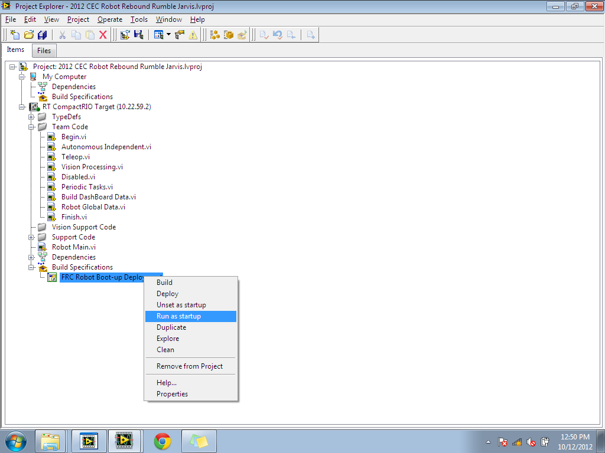

Building
When you are complete with your LabVIEW project, you will be finally be able to run your program into the robot, but to run the project you have to build it into a single executable format. To do this, simply right click the Boot-Up Deployment file and click Build (as shown in the picture.
{kind=link}
If your project has any errors or bugs, you will be shown a window stating that there is an issue within one of VI files. It will display which file has the error and what the issue is within that file. Otherwise, LabVIEW will display a window stating that the build was complete and successful (as shown in the picture to the left).
{kind=link}
Run at Startup
Once LabVIEW is done building the executable project, you must deploy your project to your robot. Note that you MUST have the computer connected to the robots cRIO to run the code, this can be done bother wirelessly or via tethered connections. There are two methods to do this: You can have the project run on start-up, which saves you the time from building and running it again when you reactivate your robot, oryou can simply deploy it once and have the project constantly run while the computer and the robot is activated. Each method has it's various uses. Running on start-up is commonly used when you finalized your LabVIEW project for the FRC tournament (since it write a true executable project as oppose to a temporary one), while deploying it once is commonly used to test you code a single time and used for debugging and refining your project. As shown in the picture, you run the project the same way you build it.
{kind=link}
If you've ran your project more than once, you will be displayed this message. This means that LabVIEW will close and overwrite these VIs. Simply click OK and continue running your project. This window will only appear if you did not unset the code at start-up and tried to recompile it at start-up.
{kind=link}
Once done, you will be promted to reboot your robot and its cRIO, just click yes and wait until it's done rebooting.
{kind=link}
To test out your project, enter the FRC Driver Station program and deploy the robot. Be sure to have robot communication, built code, and connected joysticks.